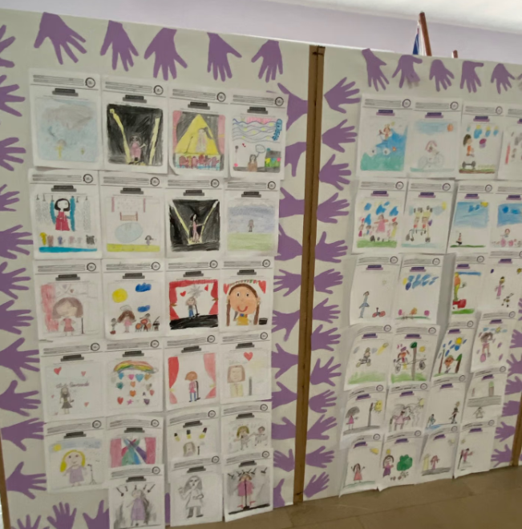
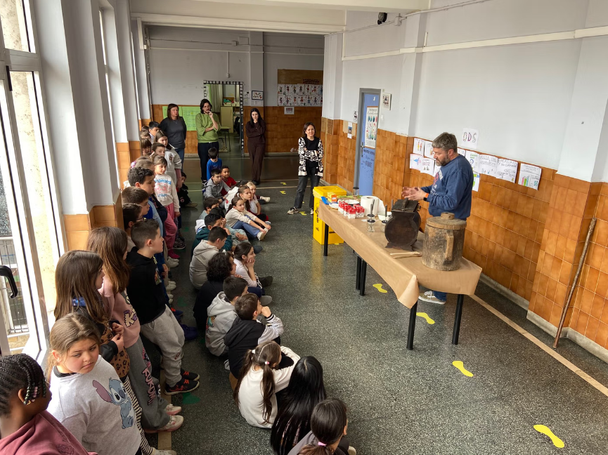
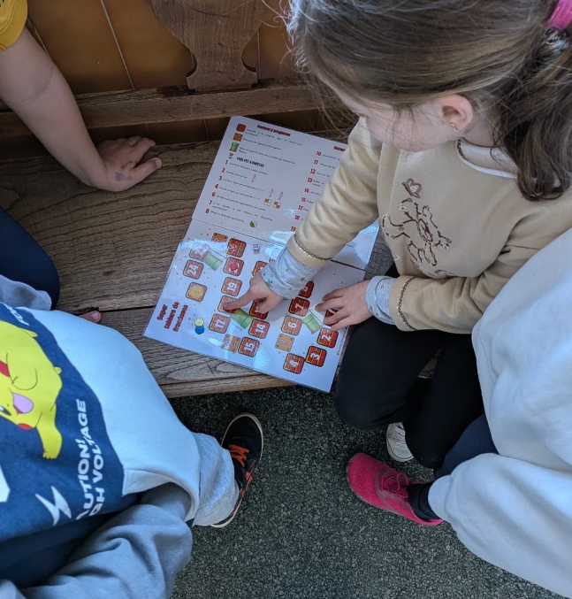
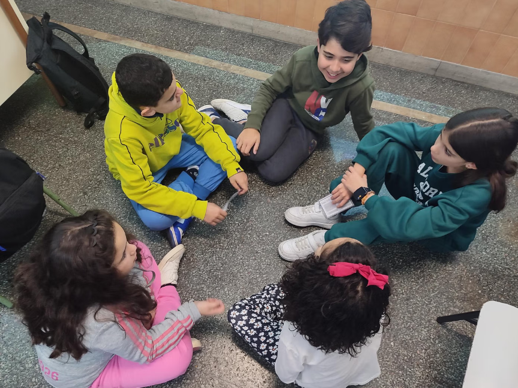
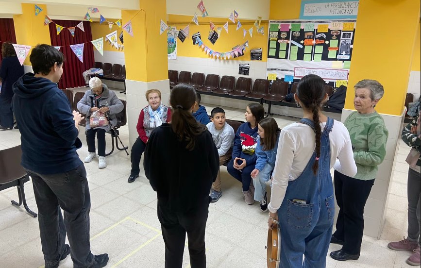

22 voces de nuestra tierra

Todo el alumnado del centro decora los paneles de la entrada con algunos de los trabajos realizados por nuestro alumnado con motivo del 8M en un proyecto titulado “22 voces de la música asturiana”.

Todo el alumnado del centro decora los paneles de la entrada con algunos de los trabajos realizados por nuestro alumnado con motivo del 8M en un proyecto titulado “22 voces de la música asturiana”.

Avelino Menéndez (papá de nuestro colegio) nos explica como es el proceso para la elaboración de la manteca.
Comenzamos con las pruebas de impresión del cono para el cohete.

El alumnado de 4º trabajando las fracciones en estaciones de aprendizaje

El alumnado de 3º y de 5º participó en una nueva actividad de cohesión entre tutores/as y tutorizados/as denominada "Detectives del acoso" en la que reflexionamos sobre distintas posibles situaciones conflictivas y la manera de encontrar soluciones pacificas.

Hoy tenemos en el cole un grupo de mujeres del “Taller de estimulación cognitiva y memoria” del Ayuntamiento de Oviedo y a un grupo de alumnos y alumnas de la asignatura de “Lenguaje Musical” de la Universidad de Oviedo para compartir con el alumnado de 4º una jornada intergeneracional.